Prepared for Marcos Pier by FortiCore
Three style frames, one hero, one programme module
Round 1 showed two whole homepages. Marcos chose the intensity of Direction A and asked for a cleaner page, more minimal type and a different colour. This round adds no pages. It puts the same hero and the same programme module into three visual systems, so the decision is about colour, type, image grade and motion, and nothing else.
Choose one system here. The full homepage, desktop and phone, is built from it.
The same in all three
- The photo and its crop.
- The draft copy, word for word.
- Composition, spacing and the order of elements.
- The three levels, with the facts from the current programme pages.
- One primary action per screen.
What changes
- The palette, and how much of the page each colour gets.
- The type pairing and its hierarchy.
- The image grade.
- The motion language, live here as hover states and a hero reveal.
Draft copy and stand-in photos from Marcos’s public profile, graded for this review. In the frames, only the programme links work; Coaching, About and Contact are navigation samples.
Route A, our recommendation
Route A: Carbon, midnight blue, oxide orange
Black carries the page and graphite lifts the programme module as a section shift. Photography and bone carry the light. Midnight blue appears where the hand goes: the hovered or chosen level. Oxide orange is the only energy signal, on the button, the rules and the marks, a few per cent of the page.
- Carbon, page, about 70 % with graphite#0B0D0F
- Graphite, panels, navigation, section shift#171B1F
- Midnight Blue, hover and chosen states, 5 to 10 %#17324D
- Oxide Orange, energy, 3 to 5 %#D66A2F
- Bone, text, 15 to 20 % with photos#F2EFE8
- Steel, labels, rules, secondary copy#99A1A8
Archivo, one family at two widths: condensed (width 80) for headlines, numbers and the wordmark, normal width for text and labels.
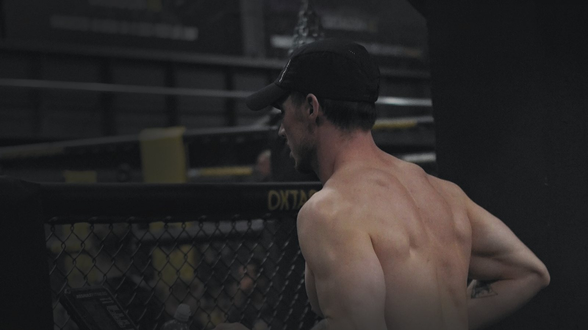
Hybrid training, Hyrox prep
Strength and running in the same week.
Three downloadable programmes, from your first hybrid week to double-session days. Pick the level that matches where you are.
Three levels, one system.
Downloadable PDF programmes, six days on and one off each week. Each level builds on the one before: Level 1 lays the base, Level 2 prepares the race, Level 3 peaks.
Level 1
6 to 8 weeks
Hybrid Base Builder
€60
Start hybrid training: you lift or you run, not yet both.
Six days on, one off
Level 2
8 to 10 weeks
Hyrox Prep System
€110
Prepare for a race, or train both and feel stuck.
Six days on, one off
Level 3
10 to 12 weeks
Hybrid Peak Protocol
€160
For serious athletes, with four double-session days.
Six days on, one off, four double-session days
Bars are weeks on a scale of twelve: solid to the shortest run, lighter to the longest. Squares are one week: filled for training, empty for the day off, split for a double session. All three are PDF downloads.
Type and hierarchy
HeroArchivo, width 80, weight 600, 40 to 112 px, line height 0.96, tracking −1.5 %, sentence case
Strength and running in the same week.
Section titleArchivo, width 80, weight 600, 28 to 52 px
Three levels, one system.
BodyArchivo, width 100, weight 400, 17 px, line height 1.5. Czech, Slovak and Polish glyphs included.
Each level builds on the one before, from your first hybrid week to double-session days. Příliš žluťoučký kůň, ľúbosť, Zażółć gęślą jaźń.
Technical labelArchivo, width 94, weight 500, 12 px, capitals, tracking 10 %
Level 28 to 10 weeksPDF download
PriceArchivo, width 80, weight 600, 30 to 40 px, tabular figures
€110
ButtonsArchivo, weight 600, 16 px. Primary: oxide orange with carbon text, a step brighter on hover. Secondary: outlined in steel.
Motion
- Hero. As the frame scrolls in, the photo settles from 106 % to 100 % and the headline, line and button rise 16 px. Once, 240 ms, ease out. Built on this page.
- Scroll reveals. Sections arrive with the same short rise, the three level panels 60 ms apart. Nothing moves twice and nothing moves on its own. Described here, not built.
- Buttons. Oxide orange brightens a step on hover and the label stays put. 240 ms. Built.
- Programme interaction. The hovered or focused level shifts to midnight blue and an orange rule grows across its top. On a phone the levels stack and the chosen level keeps its rule. Built.
With a reduced-motion setting, nothing on this page moves.
Image grade
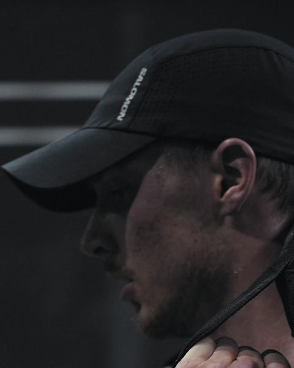
Skin and cap in low light
Shadow detail and texture
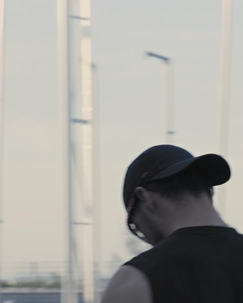
Sky and cold tones
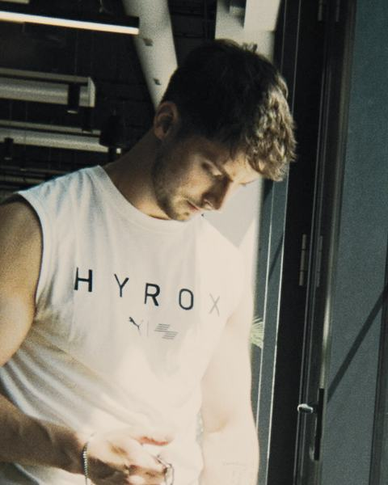
Daylight and teal
Desktop and phone
The frame above is the desktop treatment. On a desktop this block also shows the same markup in a 390 px wide box: the hero turns portrait with the headline over the lower third, the navigation keeps Programmes and a menu, and the levels stack as a ladder with the price beside the name. On a phone, the frame above is already that layout.
Route B, the earth alternative
Route B: Espresso, clay, sand
The editorial option. Warm blacks and sand light; clay carries rules, marks and hover states. The risk for this route is calm, so the grade keeps its contrast, the blues stay, and the motion runs at the same tempo as Route A with a different character.
- Espresso, page#15120F
- Bark, panels and rules#3B2B22
- Clay, marks, rules, hover#A45D38
- Sand, labels, buttons, secondary copy#C8AD88
- Ivory, text#F3EDE4
Bricolage Grotesque condensed (width 80) for headlines, numbers and the wordmark, Hanken Grotesk for text and labels.
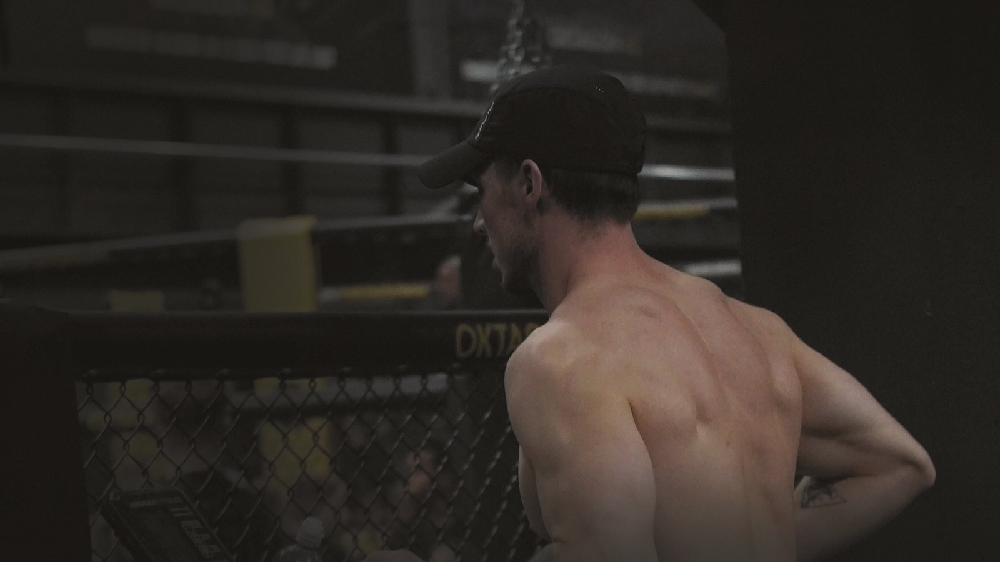
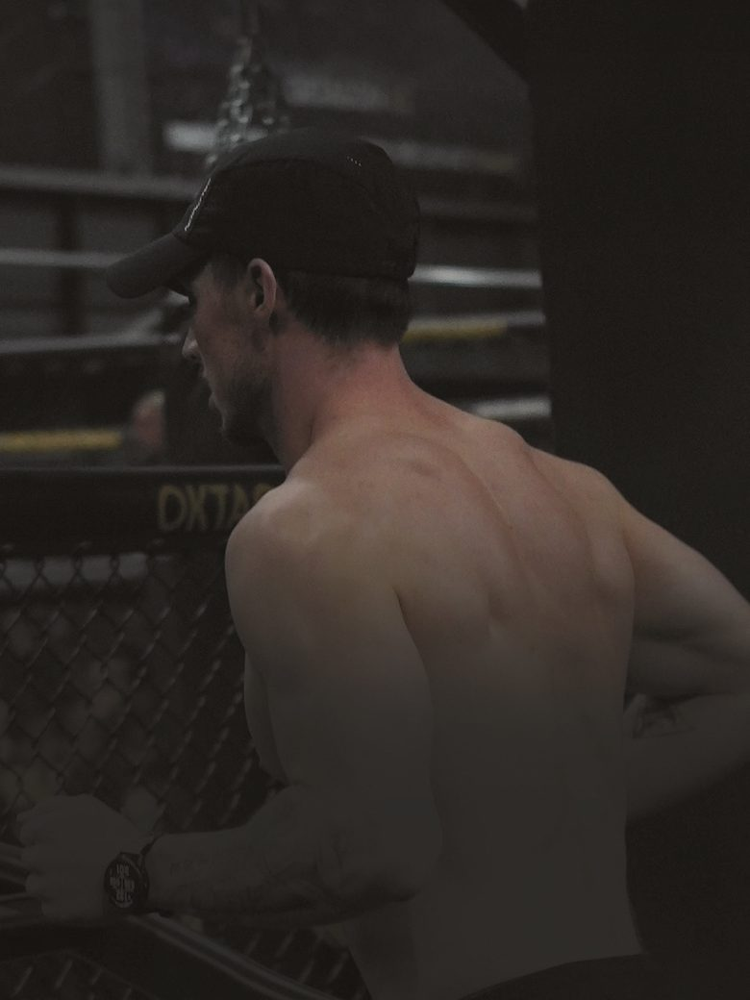
Hybrid training, Hyrox prep
Strength and running in the same week.
Three downloadable programmes, from your first hybrid week to double-session days. Pick the level that matches where you are.
Three levels, one system.
Downloadable PDF programmes, six days on and one off each week. Each level builds on the one before: Level 1 lays the base, Level 2 prepares the race, Level 3 peaks.
Level 1
6 to 8 weeks
Hybrid Base Builder
€60
Start hybrid training: you lift or you run, not yet both.
Six days on, one off
Level 2
8 to 10 weeks
Hyrox Prep System
€110
Prepare for a race, or train both and feel stuck.
Six days on, one off
Level 3
10 to 12 weeks
Hybrid Peak Protocol
€160
For serious athletes, with four double-session days.
Six days on, one off, four double-session days
Bars are weeks on a scale of twelve: solid to the shortest run, lighter to the longest. Squares are one week: filled for training, empty for the day off, split for a double session. All three are PDF downloads.
Type and hierarchy
HeroBricolage Grotesque, width 80, weight 600, 40 to 112 px, line height 0.96, tracking −2 %, sentence case
Strength and running in the same week.
Section titleBricolage Grotesque, width 80, weight 600, 28 to 52 px
Three levels, one system.
BodyHanken Grotesk, weight 400, 17 px, line height 1.5. Czech, Slovak and Polish glyphs included.
Each level builds on the one before, from your first hybrid week to double-session days. Příliš žluťoučký kůň, ľúbosť, Zażółć gęślą jaźń.
Technical labelHanken Grotesk, weight 600, 12 px, capitals, tracking 9 %
Level 28 to 10 weeksPDF download
PriceBricolage Grotesque, width 80, weight 600, 30 to 40 px
€110
ButtonsHanken Grotesk, weight 600, 16 px. Primary: sand with espresso text, ivory on hover. Secondary: outlined in sand.
Motion
- Hero. The photo reveals through a mask rising from the bottom while the headline crossfades in. 360 ms, ease. Built on this page.
- Scroll reveals. Panels crossfade and rules draw in from the left, 360 ms. Described here, not built.
- Buttons. Sand warms to ivory on hover, 360 ms. Built.
- Programme interaction. The hovered level tints to bark and a sand underline draws under its name. Built.
With a reduced-motion setting, nothing on this page moves.
Image grade
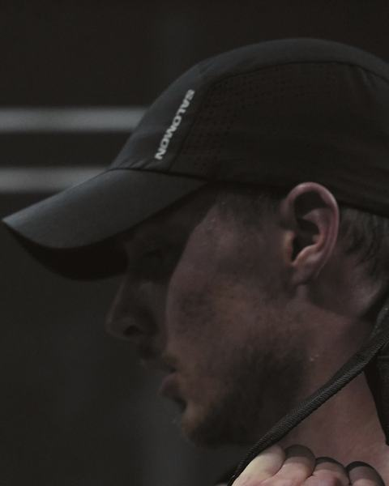
Skin and cap in low light
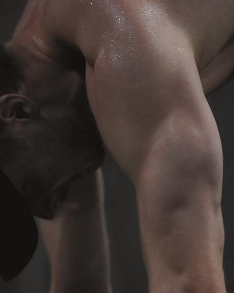
Shadow detail and texture
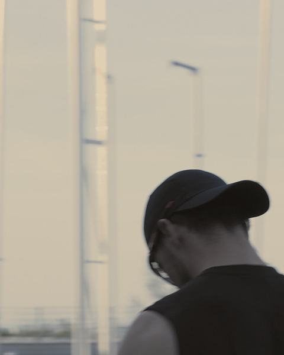
Sky and cold tones
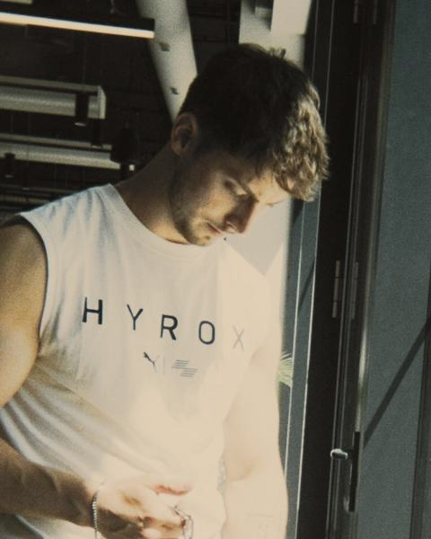
Daylight and teal
Route C, the cold alternative
Route C: Black, steel blue, cold white
The technical option. Cleaner and colder: steel blue sits in the panels and the button, light grey carries the labels, and the grade keeps the blue of skies and gyms. Safer, less warm.
- Black, page#0A0C0E
- Navy, panels, hover#172433
- Steel Blue, buttons, rules, marks#3F6F9A
- Light Grey, labels, secondary copy#D9E0E5
- Cold White, text#F3F5F6
Sofia Sans Semi Condensed for headlines, numbers and the wordmark, Geist for text and labels.
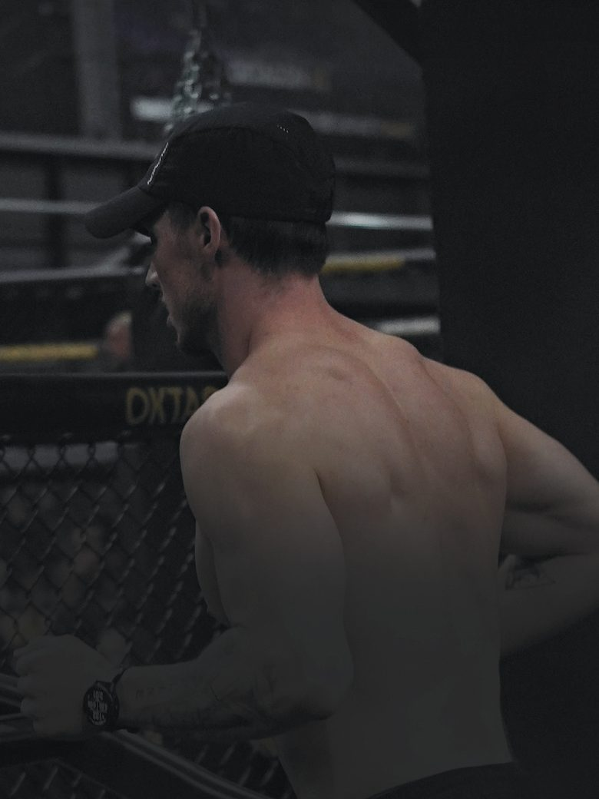
Hybrid training, Hyrox prep
Strength and running in the same week.
Three downloadable programmes, from your first hybrid week to double-session days. Pick the level that matches where you are.
Three levels, one system.
Downloadable PDF programmes, six days on and one off each week. Each level builds on the one before: Level 1 lays the base, Level 2 prepares the race, Level 3 peaks.
Level 1
6 to 8 weeks
Hybrid Base Builder
€60
Start hybrid training: you lift or you run, not yet both.
Six days on, one off
Level 2
8 to 10 weeks
Hyrox Prep System
€110
Prepare for a race, or train both and feel stuck.
Six days on, one off
Level 3
10 to 12 weeks
Hybrid Peak Protocol
€160
For serious athletes, with four double-session days.
Six days on, one off, four double-session days
Bars are weeks on a scale of twelve: solid to the shortest run, lighter to the longest. Squares are one week: filled for training, empty for the day off, split for a double session. All three are PDF downloads.
Type and hierarchy
HeroSofia Sans Semi Condensed, weight 600, 40 to 112 px, line height 0.96, tracking −1 %, sentence case
Strength and running in the same week.
Section titleSofia Sans Semi Condensed, weight 600, 28 to 52 px
Three levels, one system.
BodyGeist, weight 400, 17 px, line height 1.5. Czech, Slovak and Polish glyphs included.
Each level builds on the one before, from your first hybrid week to double-session days. Příliš žluťoučký kůň, ľúbosť, Zażółć gęślą jaźń.
Technical labelGeist, weight 500, 12 px, capitals, tracking 14 %
Level 28 to 10 weeksPDF download
PriceSofia Sans Semi Condensed, weight 600, 30 to 40 px, tabular figures
€110
ButtonsGeist, weight 600, 16 px. Primary: steel blue with cold white text, inverted on hover. Secondary: outlined in light grey.
Motion
- Hero. The headline wipes in from the left; the photo does not move. 160 ms, linear in, ease out. Built on this page.
- Scroll reveals. Elements step in where they stand: a 120 ms opacity step, no travel. Described here, not built.
- Buttons. Steel blue inverts to cold white with black text on hover, 160 ms. Built.
- Programme interaction. A 2 px steel outline and a shift to navy mark the hovered level. Built.
With a reduced-motion setting, nothing on this page moves.
Image grade
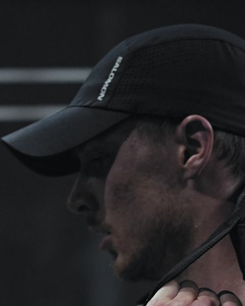
Skin and cap in low light
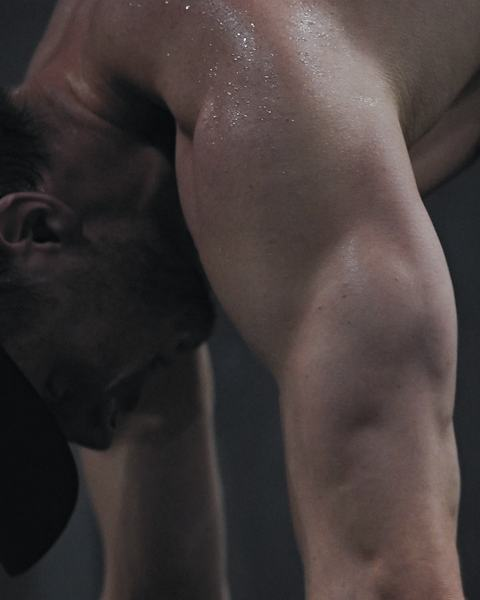
Shadow detail and texture
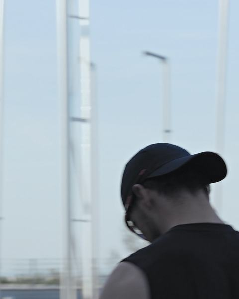
Sky and cold tones
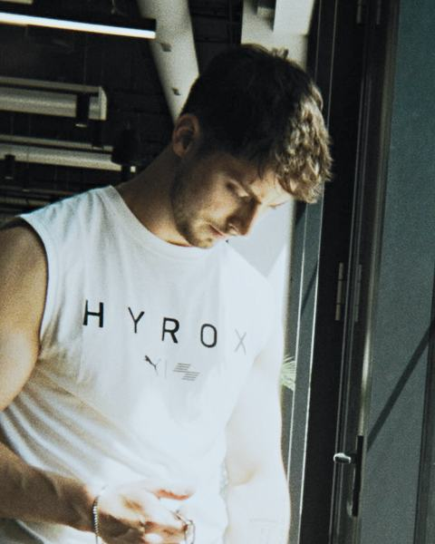
Daylight and teal
Compare and choose
The same hero, copy and module in three systems. The decision is one row of this table at a time; the three grades sit side by side first.
| Aspect | Route A | Route B | Route C |
|---|---|---|---|
| Feel | Focused, energetic, dark | Premium, editorial, warm | Technical, clean, cold |
| Marcos’s three asks: cleaner page, minimal type, new colour | Yes: one family, black with one accent | Yes, warmer than the feed | Yes, the coldest and quietest |
| Colour | Carbon and graphite, midnight blue for hover and chosen states, oxide orange at 3 to 5 % | Espresso and bark, clay and sand | Black and navy, steel blue, light grey and cold white |
| Type | Archivo at two widths | Bricolage Grotesque, Hanken Grotesk | Sofia Sans Semi Condensed, Geist |
| Grade | Cool blacks, warm highlights, blues kept | Espresso blacks, sand highlights, blues warmed | Steel blacks, cold whites, the most contrast |
| Motion | Short rise and settle, 240 ms | Crossfade and mask reveals, 360 ms | Steps and wipes, 160 ms |
| Fits the feed | Dark gyms, blue skies and warm skin are already there | Warm skin and gym light yes, blue skies a shade warmer | Dark gyms and blue skies yes, warm light no |
| Risk | Orange over large areas would look cheap, so it stays on buttons, rules and marks | Can turn calm; needs energetic photos and motion | The least distinctive and the least warm |
Our recommendation (draft)
Route A. It keeps what Marcos liked in Direction A, the intensity of the dark gym, and answers the three asks: a cleaner page, less type, a new colour. Orange gives energy at a small share of the page, midnight blue gives the hover and chosen states depth, and the grade keeps the blue skies and warm skin the feed already has.
Route B is the choice if the review wants more warmth and an editorial voice. Route C is the safe technical look, with less warmth and less of a signature.
To confirm before the full homepage
- The name on the wordmark (question 4 on the proposal page).
- Roles and qualifications, including any physiotherapy background, as Marcos wants them shown.
- Whether 1:1 coaching is open; the hero then gets its second action.
- Original photos and video. The hero is a stand-in; for the shoot, a clothed running shot from the side or behind, with room for type.
- Which lines from the programme pages can be used word for word.